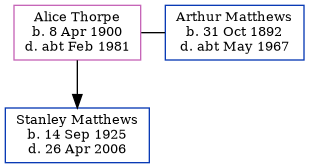

Alice Ethel Matthews (née Thorpe) 1900 - c1981
[ Home ] | [ Calendar ] | [ Surnames Index ] | [ Family History ]Alice Thorpe, the wife of Arthur Albert Matthews (the second cousin twice-removed on the father's side of Nigel Horne), was born in Ramsgate, Kent, England on Apr 8, 19001,2,3,4 and married Arthur (a mariner with whom she had 1 child, Stanley George, ) in Thanet, Kent, England around Feb 19215.
Throughout her life, she lived at 3 Camden Cottages, Plains Of Waterloo in Ramsgate on Apr 2, 19111; and at 1 Spring Villas in Ramsgate on Sep 29, 19392.
She died c. Feb 1981 in Thanet4.
Children
- Stanley George was born on Sep 14, 1925
Citations
- 1911 Census for England & Wales - Findmypast (was age 10 and the daughter of the head of the household)
- 1939 Register - Findmypast (was the head of the household)
- England & Wales births 1837-2006 - Findmypast
- England & Wales deaths 1837-2007 - Findmypast
- England & Wales Marriages 1837-2005 - Findmypast
Media
England & Wales births 1837-2006 - BMD/B/1900/2/AZ/000596/278
1939 Register - TNA/R39/1766/1766J/024/20
England & Wales deaths 1837-2007 - BMD/D/1981/1/AZ/000795/019
England & Wales marriages 1837-2005 - BMD/M/1921/1/AZ/001131/081
1911 Census for England & Wales - GBC/1911/RG14/04522/0303/5
Family Tree
Generated by ged2site. Last updated on Nov 13, 2024